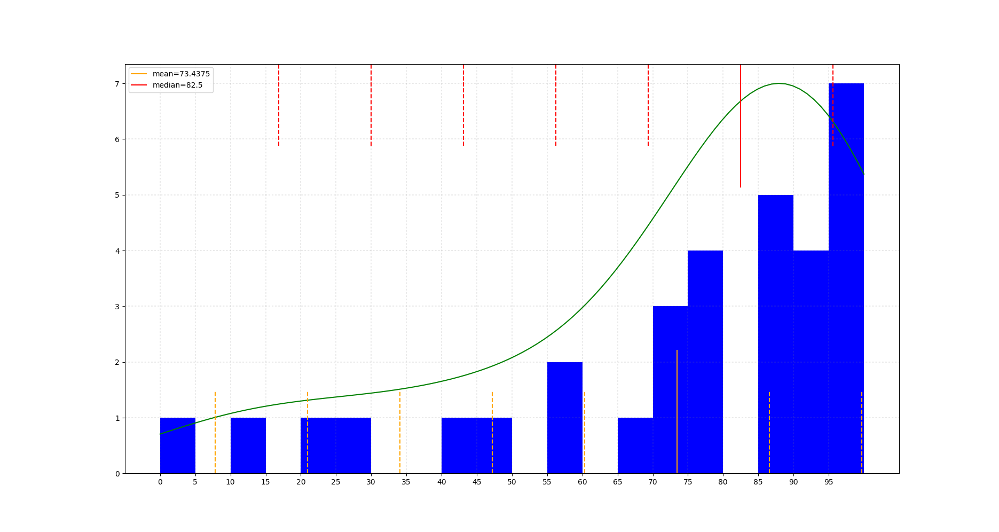
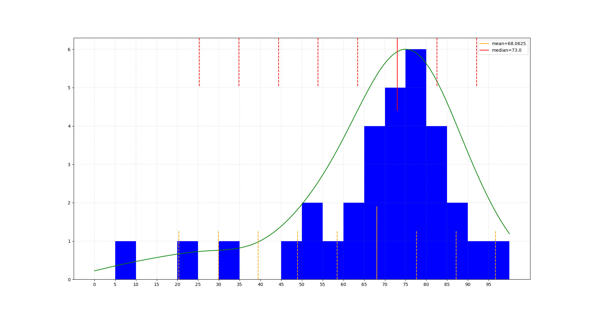
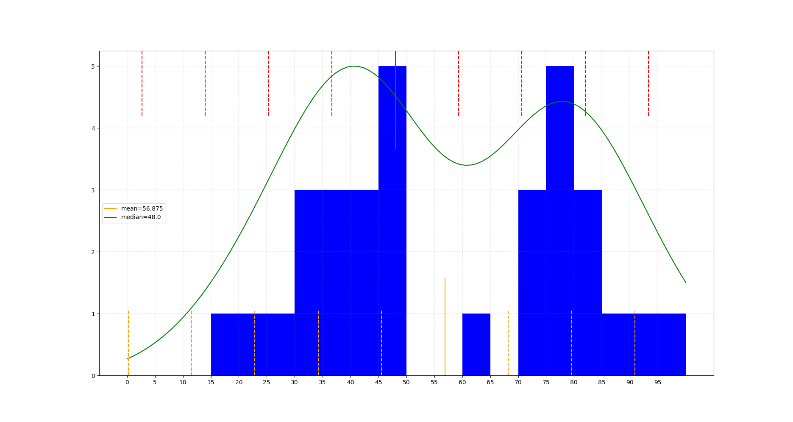
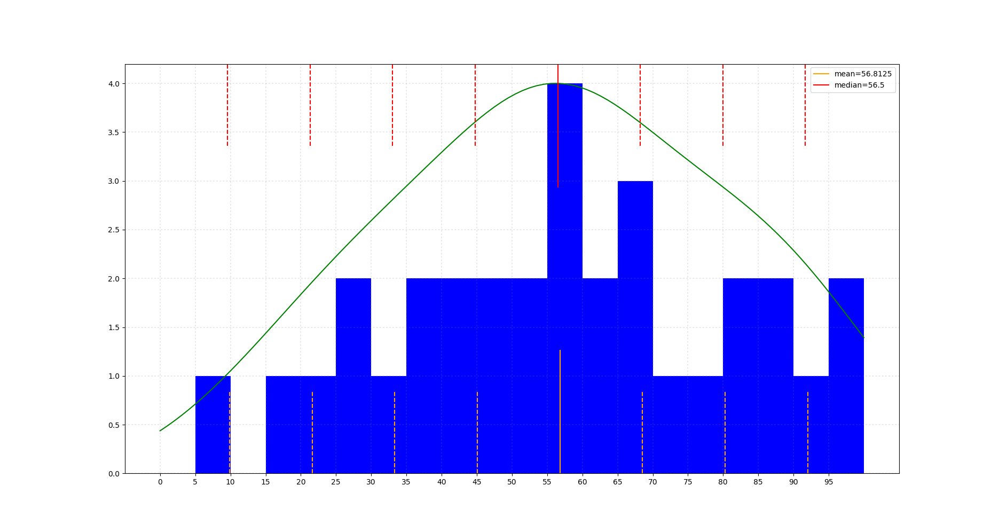

class: center, middle # Grades ## averages, medians, standard deviation, ## converting numerical scores to letter grades .author[ CORE-UA 109.01, Joanna Klukowska <br> ] --- # program to get the exam scores from the user Let's write a program to obtain the exam scores from the user. - the user should be prompted for a next score until they enter -1 - the program should validate that the number entered is between zero and 100 (inclusive) --- # calculating average score - how do you calculate the average score? -- $$average = \frac{grade_1 + grade_2 + ... + grade_n }{n}$$ - __mean__ is another word use to describe the average - __mean__ is a measure of central tendency -- --- - what does the __mean__ of exam grades tell us? - how can this be used? - what are the possible issues? -- --- - what letter grade should be associated with a score that is equal to the average grade? --- # median - __median__ is the middle score - algorithm for finding the median: - sort all grades from smallest to largest - find the middle score - if the number of grades is odd, the median is equal to the middle score - if the number of grades is even, the median is the average of the two middle scores - __median__ is a measure of central tendency -- --- - what does the __median__ of exam grades tell us? - how can this be used? - what are the possible issues? -- --- - what letter grade should be associated with a score that is equal to the median grade? --- # range of values - __smallest__ value in the range of grades - __largest__ value in the range of grades - __range__ (__smallest__, __largest__) is a measure of dispersion -- --- - what do the __smallest__ and __largest__ values of exam grades tell us? - how can this be used? - what are the possible issues? -- --- - what letter grade should be associated with a score that is smallest / largest? --- # standard deviation - __standard deviation__ is ... - algorithm for finding the stadard deviation: - calculate the mean - find the difference between each score and the mean and square that difference - add all of the squares of differences together and divide the sum by the total number of grades - take a square root of the value in the previous step - __standard deviation__ is a measure of dispersion -- --- - what do the __standard deviation__ value of exam grades tell us? - how can this be used? - what are the possible issues? --- # four different exams     --- # exam 1 grades <br> <br> .center[ ] --- # exam 2 grades <br> <br> .center[ ] --- # exam 3 grades <br> <br> .center[ ] --- # exam 4 grades <br> <br> .center[ ]